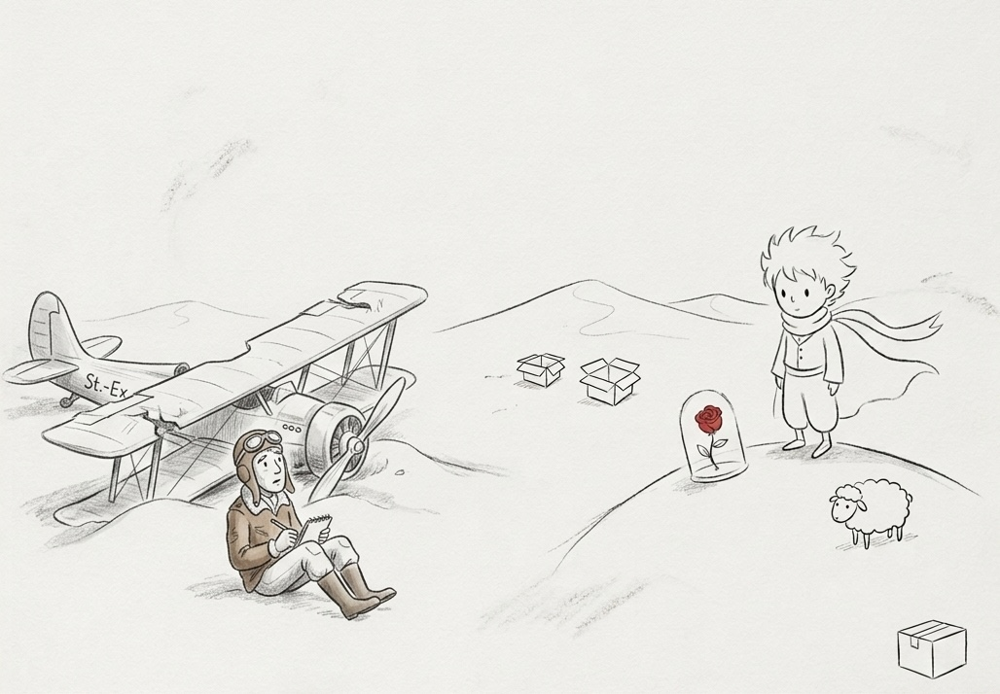

（这是我能想象出的，宇宙最温柔的起点）
（一张画坏了的草图，但我舍不得丢掉）
（星星看起来像是一颗发光的糖果）
1935.12
坠落与寻找
撒哈拉的坠落
引擎熄火的那一刻，世界突然变得好安静。漫天的星辰是我唯一的坐标，那一刻我意识到：远离人群的孤独并不算什么，可怕的是身处人群却无人能懂。
就在最绝望的清晨，我听见一个细小的、像银铃般的声音：“请......给我画一只羊。”
那个金头发的小人儿，就那样站在沙丘上，仿佛他一直就在那里等我。
——安托万·德·圣埃克苏佩里真实坠机于撒哈拉，后成为《小王子》开篇原型。